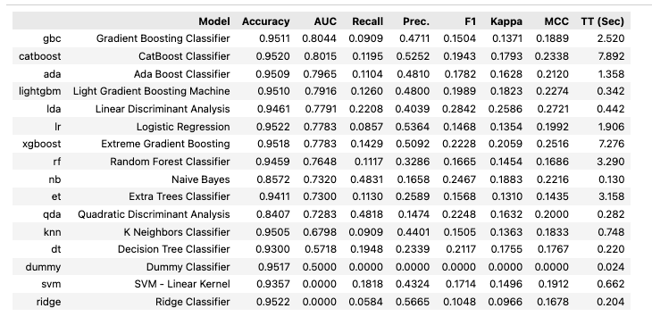
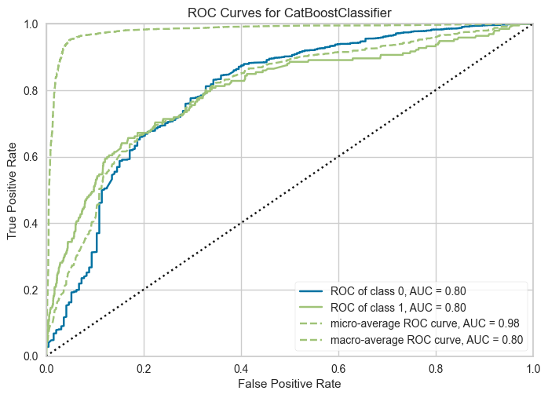
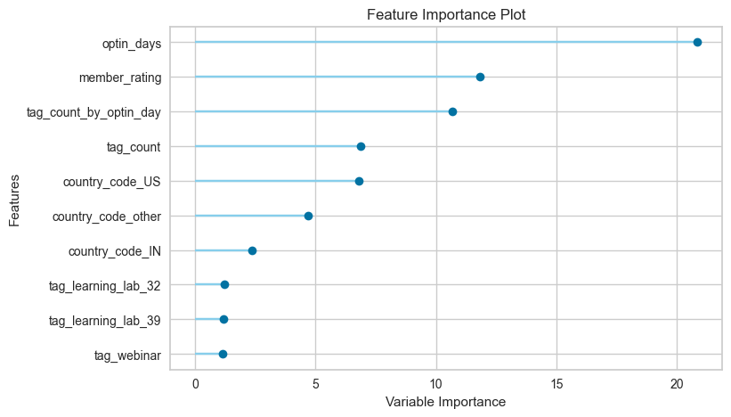
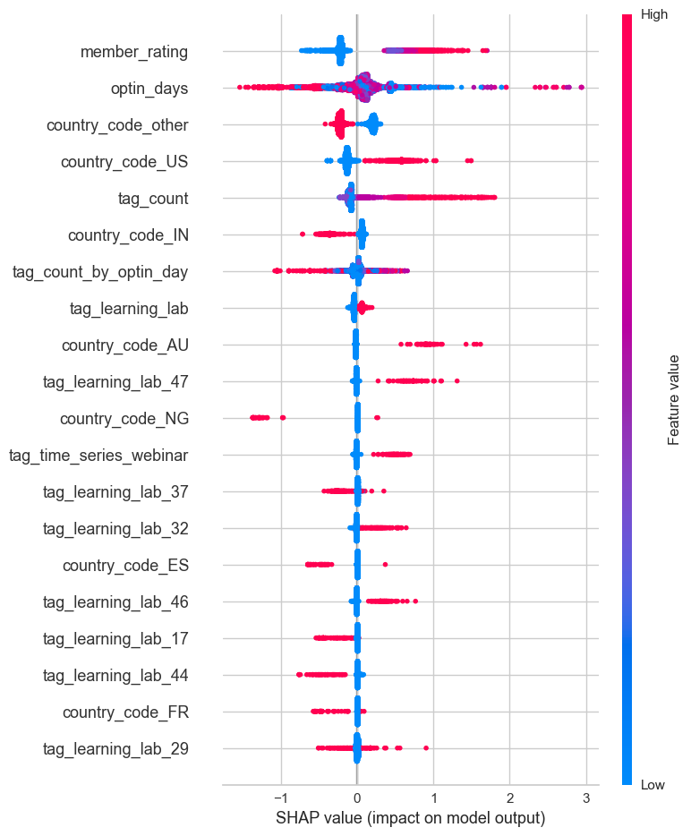
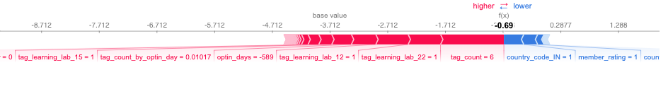
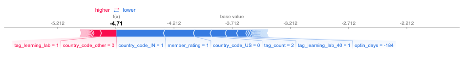
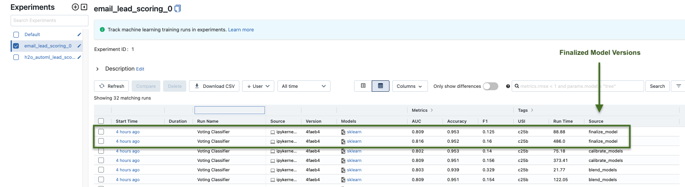

1 Modeling
This section is part of Step 1: Developing Alogrithims under the Encode Algorithms Phase of the BSPF
This phase of the analysis focuses on encoding algorithms for email lead scoring. As a reminder the goal is to predict and score subscribers that what are likely to make a purchase, based features identified and engineered in previous sections. Therefore this is a binary classification problem1. For modeling, we use the Pycaret python package. Pycaret is an open-source, low code machine learning library in Python that automates machine learning workflows. Pycaret is not just a package for building machine learning models, instead it is an end-to-end machine learning and model management tool that makes it easy to experiment with multiple machine learning models, while logging all experiments.
1.1 Testing Multiple Models
Several models were initially testing, using Area Under the Curve (AUC) as the key metric. Higher AUC indicates a better-performing model in distinquising positive and negative leads. The chart belows shows the AUC along with other metrics from initial modeling. We can see the top 3 models in terms of AUC are Gradient Boosing Classifier (0.8044) CatBoost Classifier (0.8015) and Ada Boost Classifier (0.7965).
1.2 Model Metrics
Here we can examine metrics for the Catboost model.
The choice of Catboost, a tree-based model, is driven by its inherent advantage in explainability, which is critical for understanding model decisions and behavior. It’s important to note that the final model selection will be determined in the Return on Investment (ROI) section of the course. However, it is worth mentioning that all the models under consideration exhibit very similar performance metrics. Consequently, regardless of the final choice, we can anticipate that the selected model will demonstrate metrics comparable to those of the Catboost model. This consistency across models ensures reliability in the anticipated performance, irrespective of the specific model chosen.

1.2.1 AUC-ROC Plot
An AUC-ROC (Area Under the Receiver Operating Characteristic Curve) plot is a graphical representation that summarizes the performance of a binary classification model. It showcases the model’s ability to distinguish between positive and negative instances by plotting the true positive rate against the false positive rate. The AUC value, ranging from 0 to 1, quantifies the model’s accuracy, with a higher value (higher curve towards 1) indicating better performance. The AUC-ROC plot enables data scientists and decision-makers to assess and compare models, aiding in the selection and optimization of classification algorithms.

1.2.2 Confusion Matrix
The confusion matrix is a tabular representation that provides a comprehensive summary of the performance of a classification model. It organizes predictions made by the model into four categories: true positives (TP), true negatives (TN), false positives (FP), and false negatives (FN).
- True Positive (TP): The model correctly predicts the positive class.
- True Negative (TN): The model correctly predicts the negative class.
- False Positive (FP): The model incorrectly predicts the positive class when it should have been negative (Type I error).
- False Negative (FN): The model incorrectly predicts the negative class when it should have been positive (Type II error).

Let’s understand the confusion matrix above;
- 24 predictions (bottom right) are true positives, these are the subscribers the model predicted will make a purchase and they did make a purchase. 27 (top right) are false positives. The model predicted them to make a purchase and they did not. This is where we might have wasted effort.
- 168 (bottom left) are false negatives. The model predicted they will not make a purchase but they did. These are missed opportunities. 3765 (top left) are true negatives. The model predicted they will not make a purchase and they did not. There is no impact for these.
1.2.3 Feature Importance
A feature importance plot is a graphical representation that helps us understand the relative importance of different features or variables in a predictive model. It provides insights into what factors or variables have the most significant impact on the outcome or target variable. The plot below show feature importance for the Catboost model;

You can see that the model shows the most importance features to be optin_days, member_rating and country_code_US. Note that this order may vary for another model. Different machine learning models can have different ranking for feature importance due to their inherent characteristics and the algorithims they employ to make predictions. Factors such as model architecture, algorithmic approach, feature interactions, model assumptions, all play a part in how a model ranks feature imporance.
1.2.4 Shap Values
A SHAP (SHapley Additive exPlanations) values plot is a visual representation that provides insights into the contribution of individual features to the predictions made by a machine learning model. It is based on Shapley values, a concept from cooperative game theory, which assigns a value to each feature by measuring its impact on the prediction compared to its absence or average value. The SHAP values plot displays the magnitude and direction of each feature’s impact on the model predictions, allowing for a comprehensive understanding of how different features influence the outcomes. It helps identify which features have the most significant positive or negative influence on predictions and provides a clear picture of how the model is making decisions based on different feature values. This plot enables users, including business leaders, to interpret and explain the model’s behavior and make informed decisions based on the feature contributions.
The plot below shows shap values for the Catboost model;

The higher the shap value is (x-axis), the higher the likelihood of positive. For example we can see the higher shap values for member_rating and tag_count, meaning that subscribers who have higher values for these 2 features are more likely to predicted as making a purchase.
1.2.5 Shap Values (Specific Observations)
Shap values can also be created for specific observations or individual customers in this case. Below is the plot of shap values for a customer with a predicted label of 0 and prediction score (probability) of 0.67.

The plot shows how the prediction of the model was influenced by each input feature, by displaying the contribution of each feature as a horizontal bar on the plot. The length of the bar represents the magnitude of each feature’s SHAP value, with longer bars indicating a larger impact on the prediction.
The color of the bar indicates the direction of the impact, with blue bars indicating a negative impact and red bars indicating a positive impact.
In this case, we can see that features like tag_count of 6, tag_learning_lab_22 and tag_learning_lab_2 positively impact the prediction while member_rating of 1 and country_code_IN negatively impact the prediction.
In contrast the plot below shows SHAP values for customer who also has a predicted label of 0 but a higher prediction score (probability) of 0.9;

Notice that features that are positively impacting the score inclue country_code_other and tag_learning_lab_1 while features that are negatively impacting the score include country_code_IN and member_rating of 1.
These comparison underscores the nuanced and individualized way in which different features contribute to the model’s predictions for each customer.
1.3 Blending Models (Ensembling) for Enhanced Performance
To further improve the predictive performance and extract maximum value from our modeling efforts, we employed a technique called model ensembling. By combining the predictions of multiple models, we aimed to leverage the unique strengths of each model, resulting in a more robust and accurate ensemble prediction.
After blending and calibrating the top three models, the resulting ensemble had an AUC of 0.8020 which is a very slight differnece in AUC from the individual models;
| GBM | Catboost | Ada Boost | |
|---|---|---|---|
| Model AUC | 0.8044 | 0.8015 | 0.7965 |
| VS Ensemble | - 30% | + 0.06% | + 0.69% |
This ensemble method showcases how combining individual models can enhance overall predictive accuracy, particularly in complex tasks like lead scoring.
In conclusion, this section provided a comprehensive analysis of our model metrics and interpretation. These metrics allow us to evaluate the performance and effectiveness of different machine learning models in predicting our target variable. Understanding these metrics is crucial for assessing the model’s overall predictive power and ensuring its reliability for decision-making. It is important to note that the significance of these model metrics will be revisited and tied to the return on investment (ROI) analysis in the subsequent sections of this project. By aligning the model’s performance with the business objectives and financial outcomes, we can gain deeper insights into the practical value and impact of the models deployed.
2 Experiment Tracking/Logging (MLflow)
This section is part of the Encode Algorithims under the Modeling Phase of the BSPF.
2.1 What is MLflow?
MLflow is an open-source platform designed to help data scientists and machine learning engineers track and manage their machine learning experiments. It provides tools for experiment logging, reproducibility, and model management. Developed by Databricks, MLflow aims to simplify the machine learning lifecycle by enabling users to keep track of experiments, compare different models, and efficiently share and deploy ML projects.

MLflow plays a critical role in the machine learning workflow, addressing several key challenges that data scientists often encounter:
Experiment Tracking: MLflow allows data scientists to log their experiments with ease. This includes recording the hyperparameters, metrics, and model artifacts associated with each run. Such comprehensive tracking facilitates comparison between different model iterations and helps in selecting the best performing model for deployment.
Reproducibility: In machine learning, it is crucial to ensure that experiments can be reproduced with the same results. MLflow records the exact versions of libraries, data, and code used in each run, making it easier to replicate the experiments and maintain consistency across different environments.
Collaboration: In team-based data science projects, collaboration is essential. MLflow enables seamless sharing of experiments, models, and associated artifacts with colleagues, promoting knowledge sharing and fostering a collaborative environment.
Model Management: MLflow provides functionalities for model versioning and management. This allows data scientists to keep track of model iterations, deploy the best-performing models, and roll back to previous versions if needed.
2.2 Integrating MLflow with PyCaret
PyCaret, can be seamlessly integrated with MLflow to leverage its powerful experiment tracking capabilities. The integration allows data scientists using PyCaret to log their experiments automatically into MLflow, making it easy to keep track of multiple experiments and compare different models efficiently.

In this project, MLflow will be a valuable asset as the project progresses progresses and our machine learning models go from development to production. MLflow ensures that the lead scoring process remains organized, reproducible, and collaborative. Its tracking, versioning, and management capabilities contribute to the success and efficiency of the lead scoring system, making MLflow an indispensable component in the data science workflow.
3 Return on Investment (ROI)
This section is part of Step 2: Tie Financial Value of Individual Decisions to Optimize for Profit under the Encode Algorithms Phase of the BSPF
In the preceeding phase of this project, we sucessfully developed and trainded predictive models to identify customers who are more like to make a purchase. In this phase, our focus shifts to a critical aspect of the project; Return on Investment (ROI) analysis. This involves tying machine learning models to financial value by determinning the potential cost or savings for a machine learning model’s prediction. This process us further sub-divided into 2 phases;
Identifying a threshold for which to categorize customers as Hot-Leads or Cold-Leads based on the their score (probability of purchase) from the model. This allows us to determine expected value (sales - cost) from only targeting Hot-Leads.
Optimize the threshold for maximum efficiency and ROI.
Again the primary goal here is to evaluate the financial implications of classifying customers as Hot-Leads (high probability of purchase) or Cold-Leads (low probability of purchase). Hot-Leads will be targeting with sales emails while cold leads will be targeted with value emails such as free products or CTAs to attend webinars that are highly correlated with making a purchase. It is important to understand that there is an inherent cost versus savings trade-off in targeting different types of leads. By not targeting Cold-Leads, we potentially miss out on some revenue, however there is also a savings as we nurture the Cold-Leads and potentially gain more sales in the future.
3.1 Initial Threshold & Cost Savings
This step involved calculating the cumulative gain of our machine learning model. to enhance our return on investment (ROI). Here the predictions are sorted based on the model’s score (probability) of making a purchase. The Cumulative Gain then measures the proportion of Hot-Leads and Cold-Leads based on a threshold. An arbituary threshold of 0.95 is used here as the cut off for categorizing Hot-Leads and Cold-Leads.
The table below shows the proportion of hot and cold leads based on this arbituary 0.95 threshold;
Category | Total Customers | Made Purchase |
|———————–:——————- |:——————-| | Cold-Lead | 5528 | 49 | | Hot-Lead | 14691 | 913 |
: Hot / Cold Lead Categorization (95% Gain Threshold)
This approach refines our marketing strategy. Instead of targeting all customers with sales emails, we now only focus on sending sales emails to Hot-Leads, while simultaneously nurturing Cold-Leads, whom we’ll expect to make a purchase within 90 days. The result of this would be some initial loss in sales as not all customers are targeted. Based on the Cold-Lead row in the table above, we can see that 5528 (27%) of customers will NOT be targeted for sales emails, resulting in potental lost purchases of 49. However, the initial loss in sales will be offset as we nurture cold leads and get them to make a purchase within 90 days.
3.1.1 Expected Value (Cost vs Savings)
The table below is a breakdown of cost vs savings for this new strategy vs our old strategy of targeting all customers with sales emails. Note: These values are based on assumptions stated in the earlier cost assessment.
| Old Strategy | New Strategy | Delta | |
|---|---|---|---|
| Monthly Sales | $250,000 | $237,266 | (5%) |
4 Backend Deployment (FastAPI)
This section is part of the Backend Deployment phase of the BSPF.
We are now progressing into the deployment phase of our email lead scoring project. It is crucial to understand how we integrate the developed models into our business processes. This integration is achieved through the creation of Application Programming Interfaces (APIs). The APIs serve as communication gateways between our data models and the user-facing application, in this case, a Streamlit app. This app will enable senior management and other marketing stakeholders to interact with and benefit from our email lead scoring strategies.
4.1 API Endpoints
Our API, developed using FastAPI, features several endpoints, each serving a specific purpose;
Main Endpoint
("/")This is the landing page of our API. It provides users with a welcoming interface and guides them to the API documentation. This endpoint is crucial for user orientation and ease of use.Get Email Subscribers
("/get_email_subscribers")ThisGETendpoint exposes our email subscriber data. When accessed, it returns the data with scored leads in JSON format. It’s vital for stakeholders to view and understand the current leads database.Data Reception
("/data")APOSTendpoint designed to receive data. Users can submit data in JSON format, which is then processed and stored. This endpoint is essential for updating our leads database with new information.Lead Scoring Prediction
("/predict")ThisPOSTendpoint is the heart of our API. It accepts lead data and returns scored leads, using our proprietary lead scoring models. It enables the application of our predictive model to new or existing data for real-time lead scoring.Lead Scoring Strategy Calculation
("/calculate_lead_strategy")AnotherPOSTendpoint, it calculates and optimizes lead scoring strategies based on various parameters (e.g., sales reduction safeguard, email list size). This is crucial for strategic decision-making and marketing optimization.
APIs play a pivotal role in the data science lifecycle, especially in the deployment phase. They enable the seamless integration of data science models into business processes, making predictive insights accessible and actionable for decision-makers. APIs facilitate real-time data processing and interaction, which is essential for dynamic and responsive business strategies.